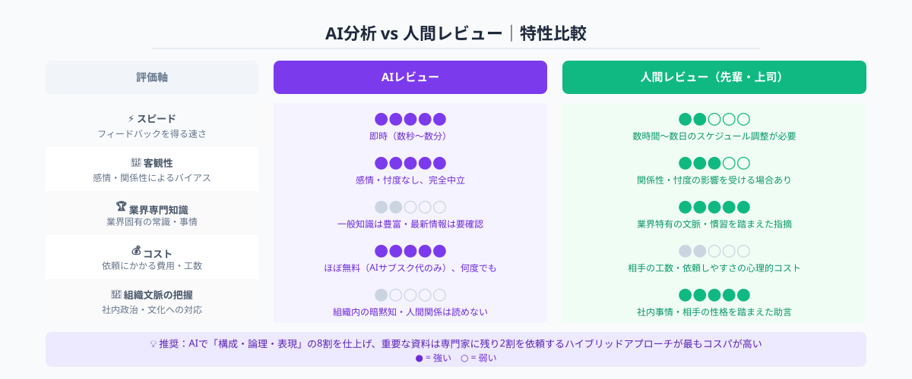
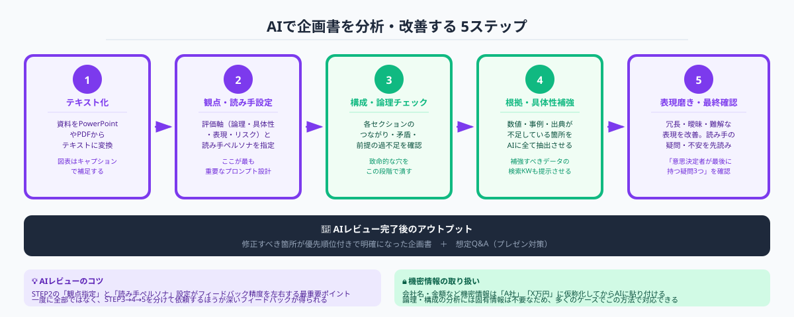

なぜ企画書レビューにAIが有効なのか
企画書・提案資料のレビューは、本来なら経験豊富な先輩や上司に頼むのが理想です。しかし現実には「忙しそうで頼みにくい」「そもそも専門知識を持つレビュアーがいない」「社外向け資料は守秘義務があってチームで見せにくい」というケースが多くあります。こうした状況でAIはいつでも・何度でも・感情なしにフィードバックを返してくれる存在として機能します。

AIが得意とする企画書レビューの観点は大きく3つあります。
①構成の論理チェック：「課題→原因→解決策→効果→アクション」という一般的なロジックの流れに沿っているか、各セクションのつながりが自然かを確認します。AIは文章全体の構造を把握し「Aを主張しているのにBの根拠しかない」という矛盾を見つけるのが得意です。
②具体性・根拠の不足箇所の特定：「〜と思われます」「効果が期待できます」という曖昧な表現、数字や事例が欠けている主張を洗い出します。「何ページのどの文が抽象的すぎるか」を具体的に指摘させることができます。
③読み手視点のフィードバック：「この資料を読んだ意思決定者は何を疑問に思うか」という視点でAIに質問させると、作者が気づいていない「穴」を発見できます。自分で書いた文章は「書いた意図」込みで読んでしまうバイアスを、AIが客観的に補完します。
新規事業提案・予算申請・外部パートナーへの提案書・補助金申請書など、「一発勝負で通したい資料」ほどAIレビューの恩恵が大きくなります。社内向けの軽い報告資料よりも、意思決定者を動かす必要がある資料に時間を割くのがコスパの高い使い方です。
AIで企画書を分析・改善する5ステップ

STEP 1：資料をテキスト形式に変換する
AIに読み込ませるには、まず資料をテキスト化する必要があります。PowerPointやWordの場合は「名前を付けて保存→テキストファイル（.txt）」またはCopy All Textでクリップボードに取得します。PDFの場合はAdobe AcrobatやPDF2Goなどのオンラインツールでテキスト抽出します。
注意点は「テキスト化した後、図表の代わりに説明文を補足する」ことです。図のキャプションや表の数値が抜け落ちると、AIが「データがない」という誤ったフィードバックをします。図の内容は「【図：売上推移グラフ。2024年→2026年で150%成長】」のように文章で補足しておきます。
STEP 2：AIに「評価の観点」と「読み手の立場」を指定する
AIに「この企画書をレビューしてください」とだけ伝えると、一般的なフィードバックしか返ってきません。効果的な分析を得るためのポイントは2つです。
①評価の観点を列挙する：「論理構成・具体性・読み手への訴求力・リスクへの言及・アクションの明確さ」の5軸で評価してほしいと明示します。AIは明示された観点に絞って深く分析するため、フィードバックの質が格段に上がります。
②読み手の立場を設定する：「50代の経営者で新規投資に慎重なタイプ」「3社から提案を受けている調達担当者」のように具体的な読み手ペルソナを与えると、AIがその視点から疑問・懸念・欠けている情報を指摘してくれます。
STEP 3：構成・論理の流れをチェックする
STEP2のセットアップが終わったら、まず全体の論理構成を評価させます。「各セクションのつながりを評価し、飛躍している箇所・前提が説明されていない箇所を箇条書きで挙げてください」と依頼します。
AIが返した指摘リストを見て、「致命的な論理の穴（構成を変えなければいけないもの）」と「表現レベルの修正（言葉を足せばいいもの）」を自分で分類します。構成を変える必要がある場合は、AIに「このセクション順序を〜と変えたほうが自然ですか？」と問い直すと代替案を提示してくれます。
STEP 4：具体性・根拠・数字の補強箇所を特定する
論理構成に問題がなければ、次は「中身の充実度」を評価させます。「主張の根拠として数値・事例・出典が不足している箇所を全て列挙し、どのようなデータがあれば説得力が増すかを提案してください」と依頼します。
AIは具体的に「〜という主張に対して、市場規模データや導入事例があると強くなる」という形で補強ポイントを示してくれます。補強に必要なデータは、AIに追加で「市場規模を裏付ける公的データの検索キーワードを教えてください」と聞くと効率よく収集できます。
STEP 5：表現の磨き上げと最終確認
構成と根拠が固まったら、最後に表現の精度を上げます。「読み手に冗長・曖昧・専門用語で伝わりにくいと感じさせる表現を指摘し、それぞれ改善案を提示してください」と依頼します。
また、「この資料全体を読んだ意思決定者が最後に持つ疑問・不安を3つ挙げてください」というプロンプトを最終確認として使うと効果的です。AIが列挙した疑問に資料が答えられていなければ、追記または事前のQ&A準備が必要です。これがプレゼン後の想定外の反論を防ぐ最も実践的な使い方です。
すぐに使えるプロンプト例
以下のプロンプトはコピー＆ペーストしてそのままChatGPT（GPT-4o）またはClaudeに使えます。【 】内を資料の内容に合わせて変更してください。
【構成・論理チェック用プロンプト】
評価軸：①論理構成の一貫性 ②各セクションのつながり ③前提説明の過不足 ④飛躍・矛盾している箇所
出力形式：
- 良い点（3つ以内）
- 改善が必要な箇所（箇条書き、場所を明示）
- 最優先で修正すべき1点
【ここに企画書テキストを貼り付け】
【根拠・具体性チェック用プロンプト】
各箇所について：
1. 不足している根拠の種類（統計データ・事例・専門家の見解 等）
2. 説得力を高めるために追加すべき情報の方向性
3. 検索すべきキーワード
を箇条書きで示してください。
【ここに企画書テキストを貼り付け】
【最終確認用プロンプト（意思決定者の疑問を先読みする）】
①疑問（3つ） ②懸念・不安（3つ） ③知りたいが書かれていない情報（3つ）
をそれぞれ挙げてください。
また、それぞれに対してこの資料内でどう対応できるかの提案もお願いします。
【ここに企画書テキストを貼り付け】
AIレビューの限界と注意点
AIによる企画書レビューは非常に有効ですが、把握しておくべき限界もあります。
①社内政治・文化的背景を読めない：「この部長は数字より感情に動かされる」「この会社は前例のない提案を嫌う」といった組織内のコンテキストはAIには分かりません。AIのフィードバックはあくまで「一般的な論理と表現の観点から」であり、組織特有の慣習や人間関係は反映されません。AIの提案をそのまま適用するのではなく、最終的な判断は人間が行う必要があります。
②最新情報・業界固有の事情を知らない場合がある：AIの知識には訓練データのカットオフがあります。特に直近の市場データや規制動向が重要な業界（医療・金融・建設等）では、AIが提示した「根拠として使えるデータ」が古い可能性があります。必ず一次情報で裏取りを行ってください。
③機密情報の取り扱いに注意する：クラウド型AIサービス（ChatGPT Plusなど）に企画書をそのまま貼り付けると、情報がサーバーに送信されます。未発表の新製品情報・M&A計画・個人情報を含む資料は、サービスの利用規約・データ保護ポリシーを確認した上で、企業のセキュリティ規定に従って使用してください。Microsoft 365 Copilotなど企業向けプランでは入力データが学習に使われない設定が可能です。
会社名・個人名・金額など機密に当たる情報を「A社」「X万円」など仮称・伏せ字に置き換えてからAIに貼り付ける方法が現実的なリスク低減策です。論理構成や表現の分析には固有情報が必須ではないため、多くのケースで対応できます。
高度な分析が必要な場合はスポット外注で専門家と連携
AIによるセルフレビューで対応できるのは「構成・論理・表現」の改善までです。それ以上の価値を資料に加えたい場合——たとえば「業界専門家の知見を踏まえた市場分析の追加」「財務モデルの検証」「相手企業が重視する観点に特化したカスタマイズ」——は、ドメイン知識を持つ人間の専門家が不可欠です。
ANKENでは、特定の業界・業務テーマに精通したエキスパートをスポット外注で依頼できます。例えば次のような依頼が可能です。
・新規事業提案書のロジック補強（MBA・事業開発経験者）
・補助金申請書の要件適合チェック（採択実績のある専門家）
・ITシステム導入提案書の技術的妥当性の検証（現役エンジニア）
・投資家向け資料（ピッチデック）のフィードバック（VC・エンジェル経験者）
AIで「8割の仕上げ」を済ませた上で、専門家に「残り2割の目利き」を依頼するというハイブリッドアプローチが、コストと質のバランスを最大化します。スポット外注は月額契約ではなくタスク単位で依頼できるため、「この1本の資料だけ見てほしい」という使い方にも対応しています。
ANKENでは特定業界・業務テーマの専門家をスポット外注で依頼できます。AIで仕上げた資料に専門家の目を通すタスク単位の依頼から対応可能。まずはお気軽にご相談ください。
👉 無料で相談する（資料レビューをスポット依頼する）「どんな専門家に頼めばいいか分からない」という段階からご相談いただけます。
よくある質問
- Q. 企画書レビューにAIはどう役立ちますか？
- A. 構成・論理・根拠・表現を客観的に分析し、説得力を高める改善案を提示できます。
- Q. AIレビューの限界は何ですか？
- A. 業界特有の専門知識や社内事情までは判断できないため、人による最終確認が必要です。
- Q. より高度な分析が必要な場合はどうすればいいですか？
- A. 業界特有の知見が必要な場合は、スポット外注で専門家と連携しAIレビューを補完する方法が有効です。
まとめ
企画書・提案資料のAI活用は、STEP1（テキスト化）→STEP2（観点と読み手を設定）→STEP3（論理チェック）→STEP4（根拠補強）→STEP5（表現の磨き上げと最終確認）の5ステップで進めると、自己レビューでは気づけない盲点を効率的に発見できます。
AIは「何度でも批判なく赤を入れてくれる共同作業者」です。ただし、組織の文脈・業界特有の事情・最新データは人間が補完する必要があります。AIで土台を固め、重要な資料は専門家の目も借りるハイブリッドなアプローチが、2026年の標準的な「資料作成の賢い進め方」になっています。